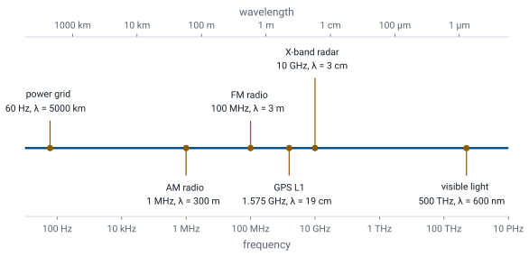

L1 - Course Introduction#
Course Introduction
Today we look at where electromagnetics shows up, and at how this course runs.
Lesson 1 · Module 1: Foundations · Maj Ellis · Dr. Neil Rogers
Learning Objectives
- I can articulate what I will learn and how I will be assessed in this course.
- I can articulate practical applications of electromagnetics.
Every circuit course so far has treated a wire as an ideal connection and a component as a lumped element that obeys Kirchhoff’s laws. That model works because the circuits were small compared to the wavelength of their signals. Electromagnetics is the theory underneath it: the electric and magnetic fields that charges and currents create, and the waves those fields form when they change in time. This lesson shows where that theory matters in the systems you will work with, and lays out how the course builds it, from the transmission line to the plane wave.
What Electromagnetics Is
Electromagnetics is the study of electric and magnetic fields, the charges and currents that create them, and the waves they form.
Circuit theory is its low-frequency limit, for circuits much smaller than a wavelength.
Circuit theory describes a network with voltages and currents at a handful of nodes. Electromagnetics describes the fields everywhere in space: the electric field between two conductors, the magnetic field around a current, and the way each one changes when the other does. When a circuit is small compared to the wavelength of its signals, the fields settle everywhere in the circuit at essentially the same instant, and the voltages and currents at the nodes are all we need. When it is not, the fields take time to travel, and we need the full theory. This course builds that theory and shows exactly where the circuit model fails.
Where It Shows Up
Systems: radar, GPS, satellite and tactical data links, cellular and Wi-Fi networks, electronic warfare.
Hardware: coaxial cable, circuit-board traces, twisted pair, connectors, antennas.
Measurement: network analyzers, nondestructive inspection of aircraft structures.
Almost every system an Air Force engineer touches moves information with electromagnetic waves. A radar transmits a wave and measures what reflects; GPS receivers time waves from satellites; data links, satellite communications, and cellular and Wi-Fi networks all send waves through the air. Inside each of those systems, the signals move through hardware that electromagnetics governs: the coaxial cable from a radio to its antenna, the microstrip traces on a circuit board, the twisted pairs in a network cable. Electromagnetic testing also finds cracks and corrosion in aircraft structures without taking them apart. In each case, the questions are the same ones this course answers: how a signal travels, how much of it reflects, and how much arrives.
The Electromagnetic Spectrum

Every one of these systems uses the same physics at a different frequency. The wavelength in free space is the speed of light divided by the frequency, so the spectrum runs from the 5000 km wavelength of the 60 Hz power grid to the 600 nm wavelength of visible light. The wavelength sets the scale on which electromagnetic effects appear. A GPS signal at 1.575 GHz has a 19 cm wavelength, the size of a handheld receiver; an X-band radar at 10 GHz has a 3 cm wavelength, which is why its antenna elements are a few centimeters across. Lesson 3 uses the same ratio to decide when a wire stops behaving like a wire.
Maxwell’s Equations
Law |
Point form |
|---|---|
Gauss’s law |
\(\nabla \cdot \mathbf{D} = \rho_v\) |
Gauss’s law for magnetism |
\(\nabla \cdot \mathbf{B} = 0\) |
Faraday’s law |
\(\nabla \times \mathbf{E} = -\frac{\partial \mathbf{B}}{\partial t}\) |
Ampere’s law |
\(\nabla \times \mathbf{H} = \mathbf{J} + \frac{\partial \mathbf{D}}{\partial t}\) |
Four equations describe every electromagnetic effect in this course. Gauss’s law says electric charge is the source of electric flux. Gauss’s law for magnetism says magnetic flux has no source: magnetic field lines always close. Faraday’s law says a changing magnetic field produces a circulating electric field, which is how a transformer and a generator work. Ampere’s law says a current, or a changing electric field, produces a circulating magnetic field. The last two together are what let a wave exist: each changing field creates the other. Lesson 2 defines the four fields in these equations, Modules 2 and 3 build each law from experiment, and Module 4 puts them together.
Kirchhoff’s Voltage Law From Faraday’s Law
Circuit laws are special cases of Maxwell’s equations. Faraday’s law in integral form says the line integral of the electric field around a closed path equals the negative rate of change of the magnetic flux \(\Phi\) through the path. Around a circuit loop, the line integral of \(\mathbf{E}\) across each element is the voltage across that element, so the left side is the sum of the voltages around the loop. When the loop is small and the magnetic flux through it changes slowly, the right side is negligible, and the result is Kirchhoff’s voltage law. At high frequency, or in a large loop, the flux term no longer vanishes, and neither does the sum of the voltages.
Kirchhoff’s Current Law From Charge Conservation
Charge is conserved, so the net current flowing out through any closed surface equals the rate at which the charge inside it decreases. Wrapping the surface around a circuit node, the surface integral of the current density is the sum of the currents leaving the node. When no charge builds up at the node, the right side is zero, and the result is Kirchhoff’s current law. On a transmission line, charge does build up along the conductors as the wave passes, and Lesson 3 shows how the line’s capacitance accounts for it.
How the Course Is Organized
Module |
Topic |
Lessons |
|---|---|---|
1 |
Fields, transmission lines, the Smith chart |
1–16 |
2 |
Vector calculus and electrostatics |
17–26 |
3 |
Current and magnetostatics |
27–32 |
4 |
Maxwell’s equations and plane waves |
33–41 |
The course starts where circuit theory first fails: the transmission line, the place a cadet is most likely to meet electromagnetics on a bench. Module 1 treats it with voltages and currents, and it ends with a lab on a network analyzer. Modules 2 and 3 then build the field theory underneath, starting with the vector calculus it needs: the electric field of charges at rest, and the magnetic field of steady currents. Module 4 lets the fields change in time, completes Maxwell’s equations, and finds the uniform plane wave, the wave that carries a radar pulse or a GPS signal through the air. Each module has a lab.
How You Are Graded
Component |
Weight |
|---|---|
LO assessments, scored 1 or 0, revisions allowed |
40% |
Graded reviews (GR 1 and GR 2) |
20% |
Final exam |
25% |
Engagement: practice, EI, optional research paper |
15% |
Every learning objective has an assessment, scored on a binary scale: a 1 means you have mastered the objective, and a 0 comes with feedback. If you made a real attempt on time, you may revise your work until you earn the 1. The two graded reviews and the final exam are individual and graded on a specification scale of 0, 0.5, or 1 per problem. Engagement rewards the practice problem sets, extra instruction, and an optional research paper. The syllabus has the details, the policies, and the full schedule.
How Each Lesson Works
Before class: read the assigned sections of Ellingson, Electromagnetics.
In class: this page, in present mode.
After class: the practice set, then the page in read mode.
Submit on Gradescope; ask in EI.
Each lesson page is both the slides and the notes. In present mode it shows the key points and equations we work through in class; in read mode, the default, it adds the full explanation and every step of each derivation. The course text is Ellingson, Electromagnetics, Vol. 1, which is free online, and each lesson ends with the sections to read before the next one. Each lesson also has a practice set, with a blank copy to work and a solutions copy to check against. The materials page collects the text, the equation sheet, the Smith charts, and every handout in one place.
Summary
Symbol / idea |
What it is |
Number to remember |
|---|---|---|
Electromagnetics |
Fields, their sources, and the waves they form |
circuit theory is the small-circuit limit |
Wavelength |
Free-space distance for one cycle |
\(\lambda = c/f\), \(c = 3 \times 10^8\) m/s |
Maxwell’s equations |
Gauss, Gauss for magnetism, Faraday, Ampere |
four equations, all of electromagnetics |
KVL |
Faraday’s law with negligible changing flux |
\(\sum v_k = 0\) |
KCL |
Charge conservation with no charge buildup |
\(\sum i_k = 0\) |
Grading |
LO assessments, GRs, final, engagement |
40%, 20%, 25%, 15% |
Practice
Where This Is Going
Lesson 2: the language of the course, fields and phasors, and the four field quantities in Maxwell’s equations.
Lesson 3: the first place circuit theory fails, the transmission line.
Lesson 2 sets up the tools every later lesson uses. It defines scalar and vector fields, describes a wave mathematically, and develops phasors, which turn every sinusoidal signal into a single complex number. It then defines the electric and magnetic fields and flux densities in Maxwell’s equations, and the material properties that connect them. With those in hand, Lesson 3 takes up the transmission line.
Before Lesson 2, read Chapter 2 of Ellingson, Electromagnetics, Vol. 1.